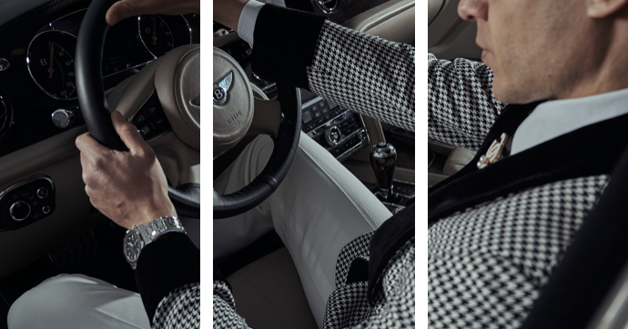

1. THU NHẬP PHẢI ĐẾN TỪ ÍT NHẤT 2 NGUỒN
Không nên chỉ có một nguồn thu nhập.
Trên thực tế, hầu hết những đại gia ở Mỹ đều có ít nhất 3 nguồn thu nhập trước khi họ kiếm được một triệu đôla đầu tiên.
Ngoài lương từ công việc chính, bạn có thể thử kiếm thêm tiền qua việc làm thêm, tự kinh doanh hoặc đầu tư.
Hiện nay cơ hội là vô số. Bạn có thể mua bán vàng, đầu tư cổ phiếu, bất động sản. Bạn có thể kinh doanh, tự mở ra dịch vụ, hay bán sản phẩm online, v.v…
Hãy nhớ, một nguồn thu nhập sẽ giúp bạn tồn tại. Nhưng để sống khỏe, tốt nhất bạn nên có nguồn thu nhập thứ 2, thứ 3.
Vì nguồn thu nhập này sẽ nâng đỡ nguồn thu nhập kia, giúp bạn đủ bình tĩnh và thời gian xoay vần nếu chẳng may nguồn thu nhập cố định gặp sự cố.
2. TIẾT KIỆM TIỀN VÀ ĐẦU TƯ
Mức thu nhập quan trọng, nhưng khoản tiết kiệm và đầu tư còn quan trọng hơn. Ramit, Sethi, chuyên gia tài chính cá nhân, từng viết:
“Các triệu phú thường đầu tư 20% thu nhập mỗi năm. Sự giàu có của họ không đo lường bởi số tiền họ làm ra từng năm mà bởi mức độ họ tiết kiệm và đầu tư theo thời gian”.
Tiết kiệm, không phải dè sẻn quá mức. Có những người không dám tiêu xài, lúc nào cũng để dành. Tôi không khuyến khích cách sống này. Chúng ta làm ra tiền để sống, để hưởng thụ cuộc sống. Và tin xấu là phần lớn những người “hà tiện” thường không biết đầu tư đúng cách.
Nhưng cũng có những người sống quá thoải mái với số tiền mình làm ra được.
Bạn để ý xem, nhiều nghệ sĩ, người mẫu, cầu thủ, những người làm ra rất nhiều tiền, và những người giàu đột xuất từ bán đất, trúng vé số… thường không có tiền vào cuối đời vì có bao nhiêu tiền họ “đốt” hết, không tiết kiệm, không biết quản lý tài chính cá nhân.
Vì thế hãy học cách tiết kiệm tiền theo nguyên lý 6 cái lọ, trong đó có một lọ dùng để đầu tư, phát triển bản thân.
Đó là vấn đề của sự thoải mái. Người giàu thấy thoải mái với những người thành công khác. Người nghèo lại thấy không thoải mái khi gần những người rất thành công vì họ sợ bị từ chối hoặc họ cảm thấy họ không thuộc về nơi đó. Để tự bảo vệ mình, cái tôi của họ sẽ đưa ra những phán xét và phê phán.
Thế nên, bạn muốn trở thành người giàu hay người nghèo, đó là do lựa chọn của chính bạn.

Hãy gặp gỡ những người truyền động lực, cảm hứng tích cực và tham gia vào các nhóm nghề nghiệp, chia sẻ kinh nghiệm.
Bạn sẽ nhận thấy bản thân được học hỏi rất nhiều điều mà sách vở không dạy bạn!
Đến với Run2Riches ứng dụng đi bộ kiếm tiền hàng đầu Việt Nam.
Bạn đã có ngay công cụ để kiếm tiền ngay tại nhà.
Trong ứng dụng Run2Riches sẽ có 3 cách chính để kiếm tiền: